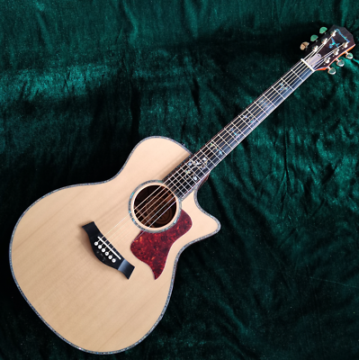

La guitarra es un instrumento musical de la familia de los cordófonos, es decir los instrumentos que producen su
sonido al hacer vibrar las cuerdas. Es un instrumento de cuerda pulsada, compuesto de una caja de resonancia, un
mástil sobre el que va adosado el diapasón o trastero —generalmente con un agujero acústico en el centro de la
tapa (boca)— y seis cuerdas. Sobre el diapasón van incrustados los trastes, que permiten dividir el continuo
de sonidos en las 12 notas del sistema tonal, haciendo posible la interpretación de las mismas con mayor
facilidad.
La guitarra es el fruto de siglos de evolución de estos instrumentos de cuerda. Los orígenes del instrumento
proceden de civilizaciones de Asia menor (sumerios, acadios, asirios...) de. 2500 a. C. Desde entonces los
cordófonos se han desarrollado de muy diversas maneras a lo largo del tiempo con diferentes números de cuerdas y
formas. Algunos instrumentos de la familia son el cuatro, el ukelele, el requinto, el charango y distintos tipos
de guitarrón, como el guitarrón mexicano, de uso frecuente por los mariachis.
La guitarra tal y como la conocemos hoy es la heredera del instrumento que ideó Antonio de Torres, constructor
almeriense que sentó los cánones y proporciones actuales. La guitarra es hoy un instrumento polifacético que
se usa tanto en la música clásica como en las músicas populares. En su versión electrificada es el instrumento
más utilizado en géneros como blues, rock y heavy metal. También es la protagonista en las músicas populares de
raíces de España y Latinoamérica. Cabe destacar la importancia que la guitarra tiene en el flamenco, género
musical que nace en España durante el siglo XVIII. En la actualidad los guitarristas flamencos suelen usar una
guitarra con ligeras variaciones en la construcción, conocida como guitarra de flamenco. La guitarra clásica
es también bastante frecuente entre los cantautores.